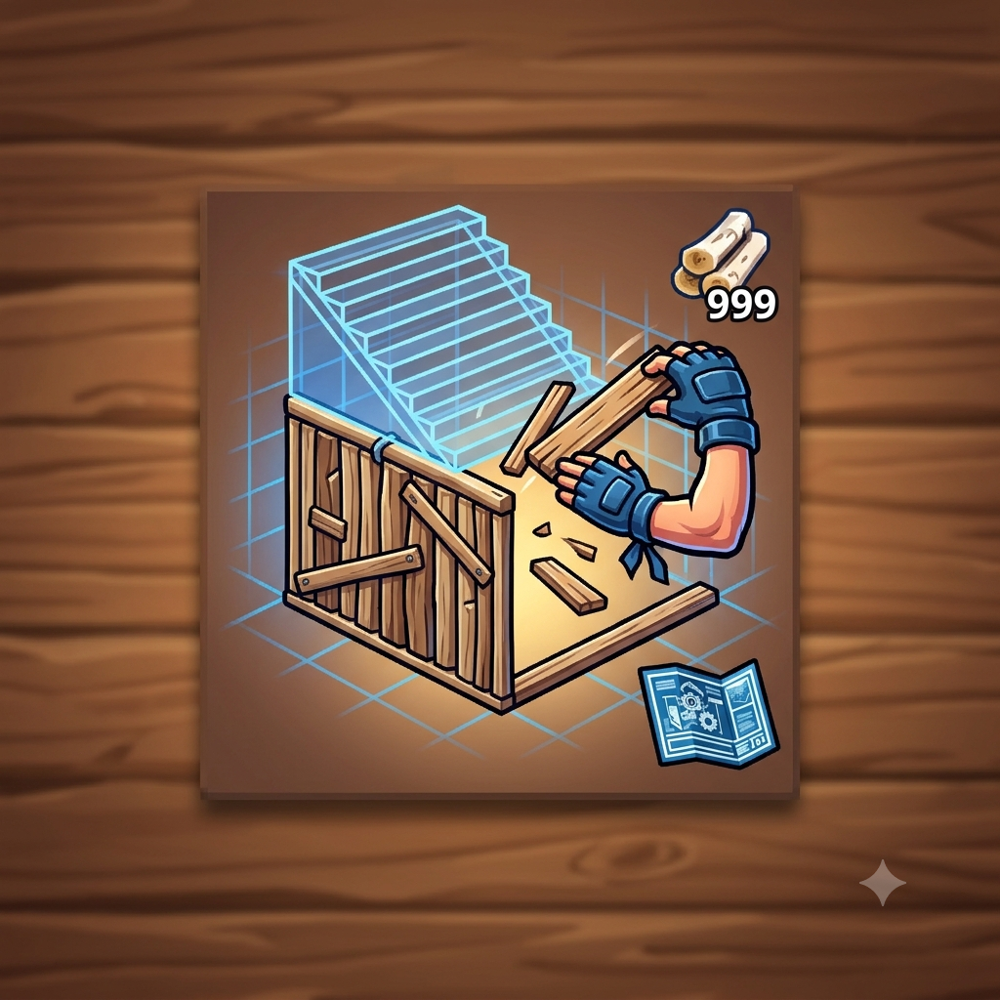

Como Funciona o Ônibus de Batalha?
Por: Luiz Henrique
O Ônibus de Batalha é o ponto de partida de toda partida de Fortnite! Levado por um balão gigante, ele atravessa a ilha para que 100 jogadores saltem de paraquedas.
Fonte: Fortnite Wiki
Dicas, curiosidades e novidades sobre o Battle Royale mais famoso do mundo!
Por: Luiz Henrique
O Ônibus de Batalha é o ponto de partida de toda partida de Fortnite! Levado por um balão gigante, ele atravessa a ilha para que 100 jogadores saltem de paraquedas.
Fonte: Fortnite Wiki

Por: Luiz Henrique
As Lhamas de Suprimentos foram introduzidas no jogo como fontes valiosas de recursos, munição e itens de cura. Encontrar uma durante a partida pode mudar o seu jogo!
Fonte: Epic Games

Por: Luiz Henrique
A mecânica de construção rápida revolucionou os jogos de tiro. Com a chegada do modo "Construção Zero", o jogo atraiu novos jogadores que preferem focar no combate direto.
Fonte: TechTudo

Por: Luiz Henrique
Manter o escudo no 100% é fundamental para sobreviver aos confrontos. Entre minis, escudões e peixes de escudo, planejar seus itens de cura é vital para garantir a vitória.
Fonte: Fortnite Guide

Por: Luiz Henrique
Alcançar a famosa 'Vitória Royale' exige estratégia, boa mira, posicionamento na tempestade e paciência nos momentos decisivos do final da partida.
Fonte: Esportesbr

Por: Luiz Henrique
O Fortnite é famoso por suas colaborações com universos como Marvel, DC, animes e celebridades da vida real, transformando o jogo em um verdadeiro metaverso cultural.
Fonte: IGN Brasil